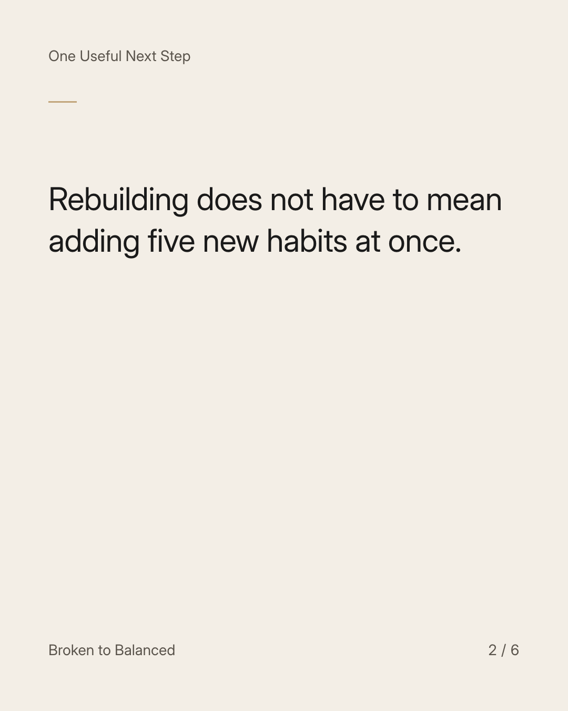
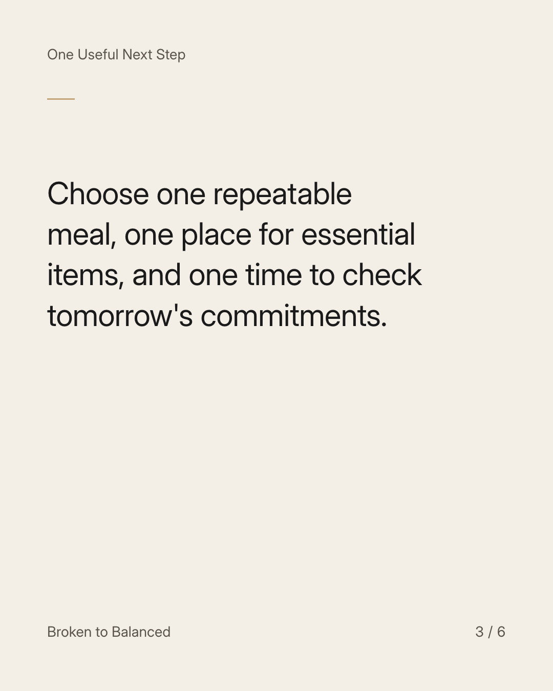
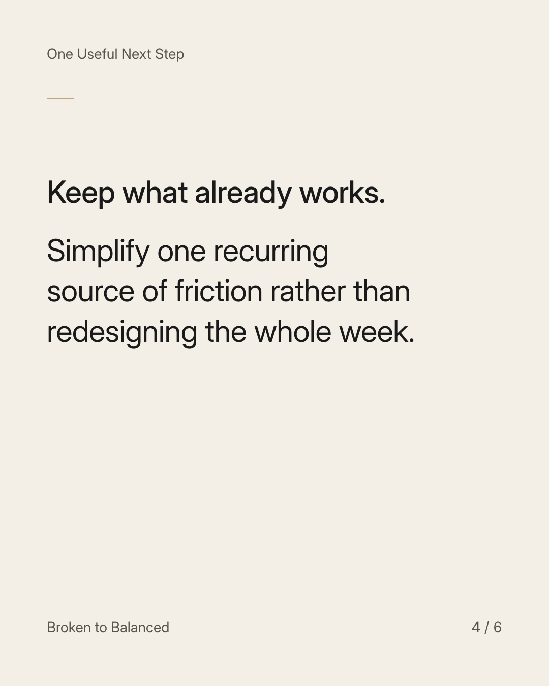
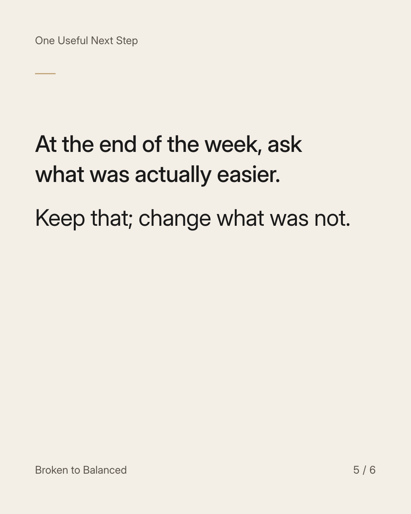
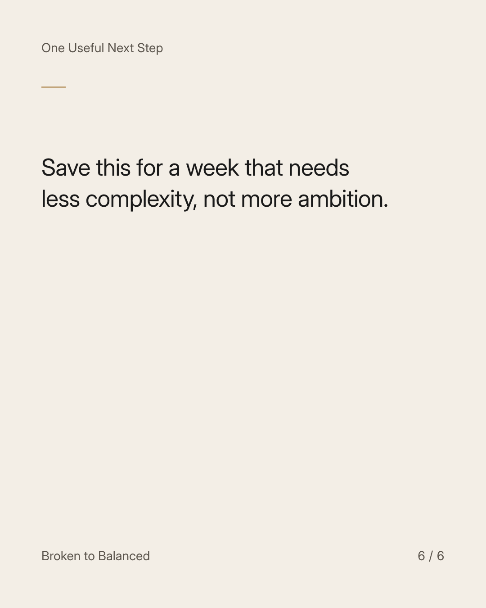

Exact text and accessibility text
When your head is full, give your week fewer moving parts.
Slide 1 of 6. When your head is full, give your week fewer moving parts.


Exact text and accessibility text
Rebuilding does not have to mean adding five new habits at once.
Slide 2 of 6. Rebuilding does not have to mean adding five new habits at once.


Exact text and accessibility text
Choose one repeatable meal, one place for essential items, and one time to check tomorrow's commitments.
Slide 3 of 6. Choose one repeatable meal, one place for essential items, and one time to check tomorrow's commitments.


Exact text and accessibility text
Keep what already works. Simplify one recurring source of friction rather than redesigning the whole week.
Slide 4 of 6. Keep what already works. Simplify one recurring source of friction rather than redesigning the whole week.


Exact text and accessibility text
At the end of the week, ask what was actually easier. Keep that; change what was not.
Slide 5 of 6. At the end of the week, ask what was actually easier. Keep that; change what was not.


Exact text and accessibility text
Save this for a week that needs less complexity, not more ambition.
Slide 6 of 6. Save this for a week that needs less complexity, not more ambition.
Exact caption
Plain-text fallback: select and copy the caption.